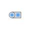

PlugToPin_pConnect one (positive) pin |

|
Information
This information is part of the Modelica Standard Library maintained by the Modelica Association.
Connects the single-phase (positive) pin k of the polyphase (positive) plug to a single-phase (positive) pin.
See also
Parameters (2)
| m |
Value: 3 Type: Integer Description: Number of phases |
|---|---|
| k |
Value: 1 Type: Integer Description: Phase index |
Connectors (2)
| plug_p |
Type: PositivePlug |
|
|---|---|---|
| pin_p |
Type: PositivePin |
Used in Examples (2)
|
Modelica.Electrical.QuasiStatic.Polyphase.Examples Balancing an unsymmetrical star-connected load |
|
|
Modelica.Electrical.QuasiStatic.Polyphase.Examples Balancing an unsymmetrical delta-connected load |
Used in Components (2)
|
Modelica.Electrical.QuasiStatic.Polyphase.Basic Connect all (positive) pins |
|
|
Modelica.Electrical.QuasiStatic.Polyphase.Sensors Frequency sensor |